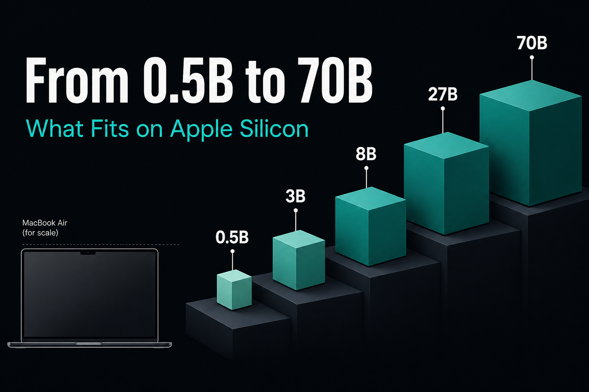
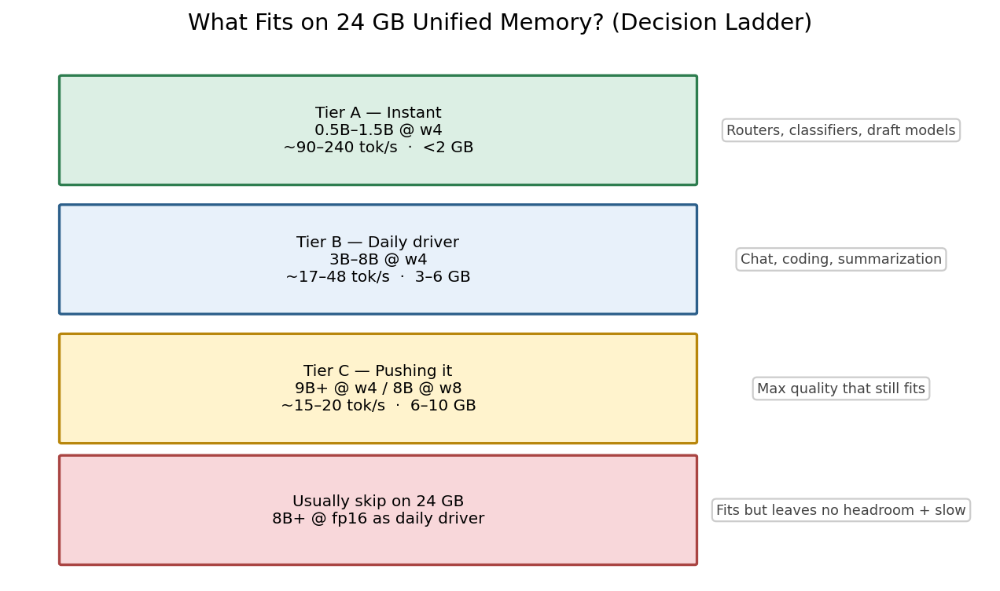
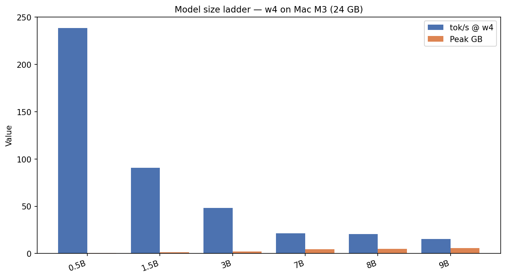
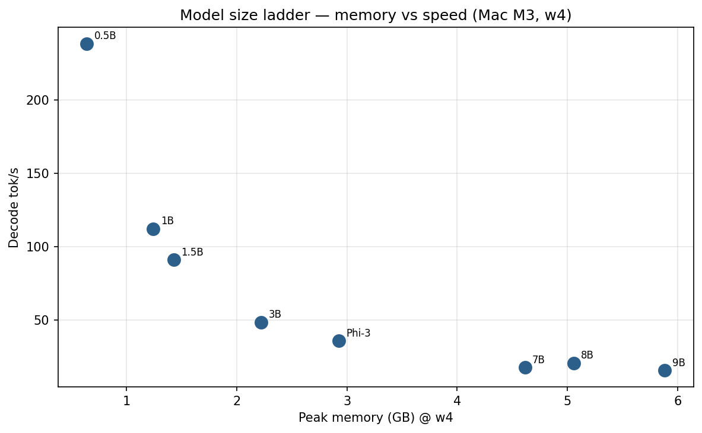
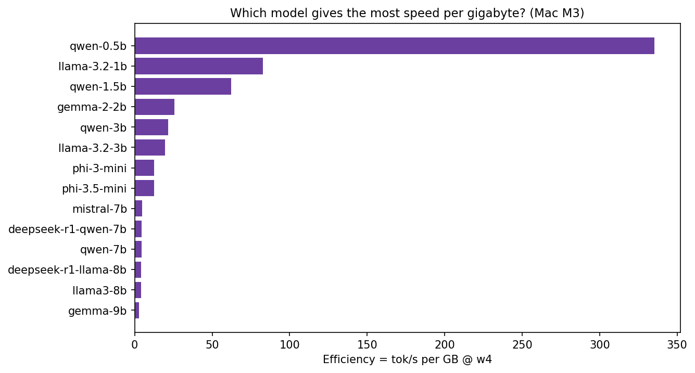
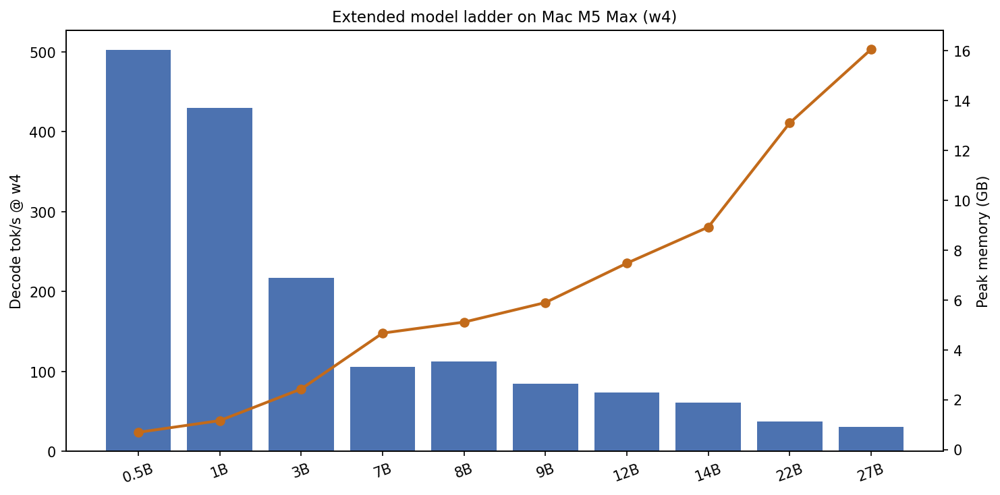

Local LLMs on Apple Silicon — Part 5 of 7
From 0.5B to 70B: What Fits on Apple Silicon
A practical size ladder with M3 and M5 Max numbers
UPLOAD THIS IMAGE IN MEDIUM
../images/thumbnails/thumb_04_model_ladder.png
“Which model should I run locally?” is two questions:
- Will it fit?
- Will it be fast enough?
UPLOAD THIS IMAGE IN MEDIUM
../images/workflows/04_fit_ladder.png
The w4 ladder on Mac M3
- Qwen 0.5B — 238 tok/s · 0.64 GB
- Llama 3.2 1B — 112 tok/s · 1.2 GB
- Qwen 3B — 48 tok/s · 2.2 GB
- Llama 8B — 21 tok/s · 5.1 GB
- Gemma 9B — 15 tok/s · 5.9 GB
UPLOAD THIS IMAGE IN MEDIUM
../images/04_model_size_ladder.png
UPLOAD THIS IMAGE IN MEDIUM
../images/04_ladder_scatter.png
UPLOAD THIS IMAGE IN MEDIUM
../images/01_efficiency_tps_per_gb.png
Fun fact: Qwen 0.5B @ w4 exceeds 238 tok/s on M3 — faster than most people type.
M5 Max extends the ladder
UPLOAD THIS IMAGE IN MEDIUM
../images/04_m5_extended_ladder.png
UPLOAD THIS IMAGE IN MEDIUM
../images/01_m3_vs_m5_w4.png
Cheat sheet (24 GB)
- IDE copilot → 7B w4
- Offline chat → 8B w4
- Router / draft model → 0.5B–1.5B w4
- Max quality that still fits → 9B w4 or 8B w8
./scripts/run_article.sh 4 "Mac M3"
← Part 4 · Next → Part 6: Full Stack